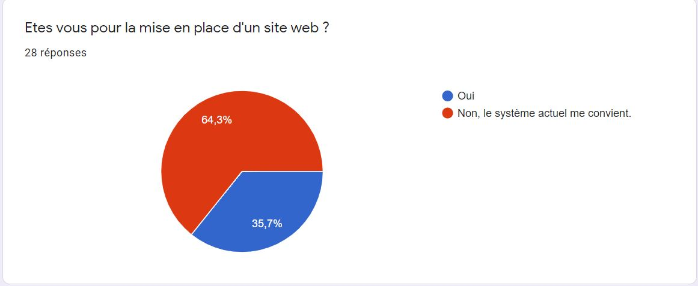

Mes projets
AFH & AS NEGOCE est une petite entreprise d'export d'éléctromenager vers l'Afrique de l'ouest. Ces principaux clients se tiennent informés de l'arrivée de nouveaux produits par l'envoi de photo sur whatsapp. Le chef de l'entreprise se demande alors si la mise en place d'un site web ne facileterai pas la communication d'arrivage ou du stock présent.
Création d'un sondage ici.
Les résultat n'étant pas ceux espérer, le projet de site web a quand même été maintenu.
J'ai alors revu mes ambitions a la baisse et décider de seulement créer un site vitrine.
Voici comment se présente le site vitrine.
L'idée de créer un formulaire qui provoquerai l'envoi automatique du catalogue a été envisagé mais abandonné par la suite. Le site web a lui même été abandonné pour faute de moyen pour l'hébergement : le chef de l'entreprise ne trouve pas d'avantage immédiat a son utilisation mais garde l'idée après un developpement future de sa stucture.
- Participation à un projet d’évolution d’un SI (solution applicative et d’infrastructure portant prioritairement sur le domaine de spécialité du candidat)
- Prise en charge d’incidents et de demandes d’assistance liés au domaine de spécialité du candidat
- A1.1.1 , Analyse du cahier des charges d'un service à produire
- A1.1.2 , Étude de l'impact de l'intégration d'un service sur le système informatique
- A1.3.4 , Déploiement d'un service
- A1.4.1 , Participation à un projet
- A3.2.2 , Remplacement ou mise à jour d'éléments défectueux ou obsolètes
- A5.1.6 , Évaluation d'un investissement informatique